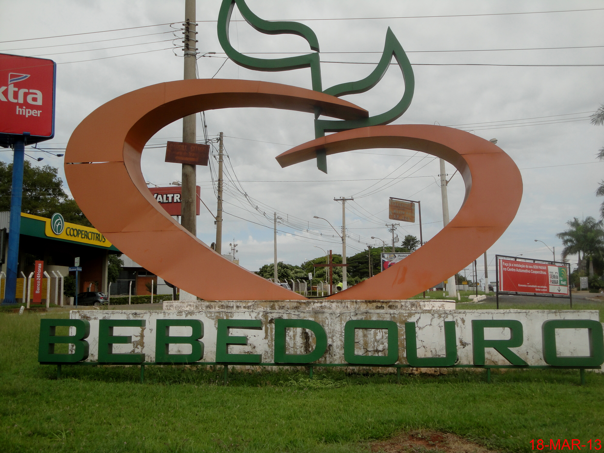
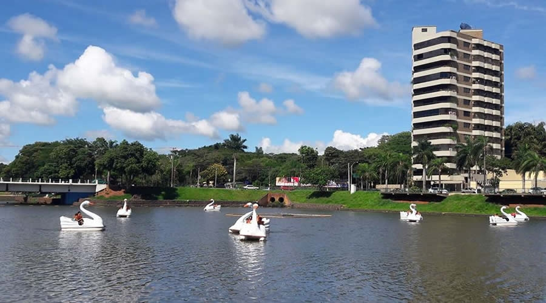
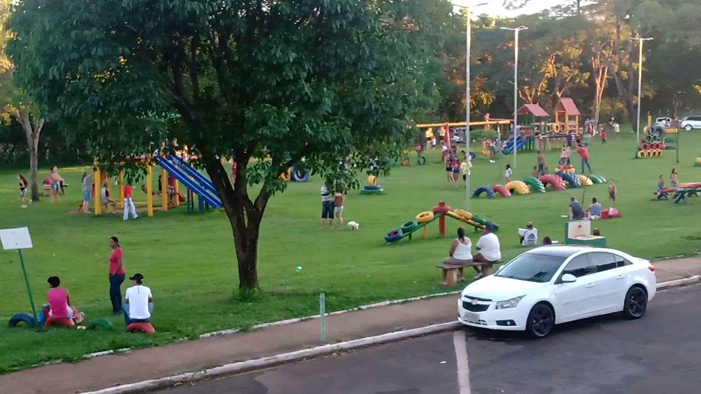
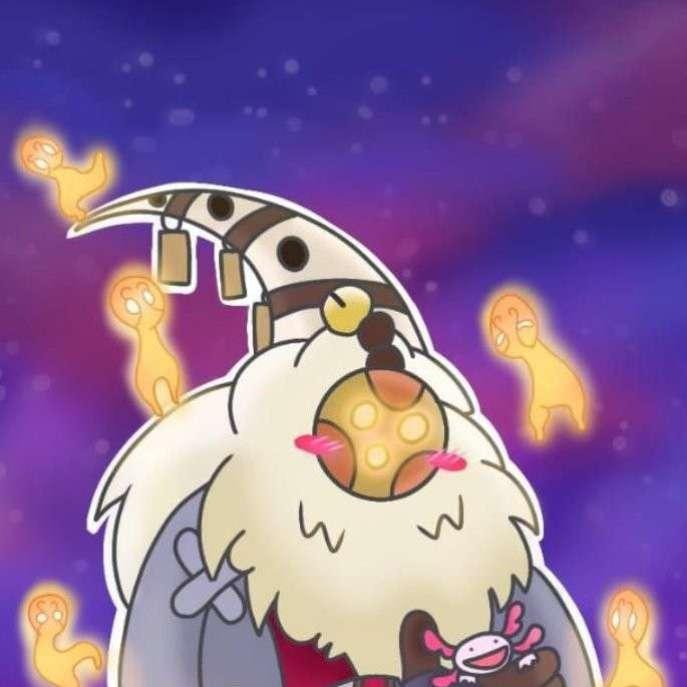

Minha vida
Olá, sou Victor, atualmente tenho 15 anos, nasci em Franca, porém estou morando em Bebedouro, estou estudando na Etec, fazendo o ensino médio e cursando o 1º ano de informática para a internet.
Minha Cidade
Bebedouro é uma cidade relativamente pequena, nela tem algumas atrações bem divertidas
O lago artificial de Bebedouro
Parque da Família
Meus passatempos
Como qualquer pessoa, tenho meus "hobbies", e irei citar alguns deles.
desenhar
Gosto muito de desenhar, estou estudando os 7 fundamentos do desenho para poder melhorar nessa atividade que tanto amo. Aqui está um exemplo meio antigo de um desenho completo meu
Nunu e Willump
Nunu e Willump são personagens do jogo league of legends,qual eu jogo, e sou mono com esses 2, gosto muito de jogar com eles, ler suas histórias, desenhar eles... São personagens que gosto bastante.

Nunu e Willump em jogo
Biografia de Nunu e Willump
Minhas séries favoritas
Confesso que nunca fui muito de assistir séries, sempre preferi ver desenhos animados.
Amphibia
Recentemente assisti Amphibia, um desenho que conta a história de 3 amigas que ao abrir uma caixa de música, são enviadas para um mundo de sapos falantes. Este desenho aparentemente bobo ganhou meu coração, simplesmente se tornou meu desenho favorito, tudo nele me encanta, dês da história até a trilha sonora!
Avatar a lenda de Aang, e korra
Os 2 Avatares são indiscutivelmente desenhos íncriveis! tudo neles é tão bem feito, tão cuidadosamente pensando que não tem como eu não os citar aqui.
Hilda
Hilda é maravilhoso, a animação de Hilda, produzida pela netflix, é uma adaptação dos quadrinhos, e oque eles conseguiram fazer foi sensacional, a animação é extremamente confortável de se ver, e o mundo desse desenho é tão íncrivel e divertido, simplesmente uma obra prima.